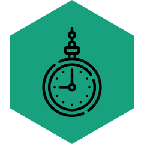
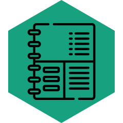

Consistió en crear un sitio web profesional que sirviera como escaparate para los trabajos realizados por la empresa.

Se desarrolló una herramienta móvil intuitiva que permite al personal registrar y gestionar sus horarios de manera eficiente.
Esta herramienta fue creada para centralizar y automatizar la gestión de inventarios.

La aplicación se diseñó para simplificar el cálculo y generación de APU's (Análisis de Precios Unitarios), facilitando la preparación de presupuestos y licitaciones.
El diseño y desarrollo de soluciones digitales fue una de las actividades profesionales que llevé a cabo durante mis 2 años en TC Construcciones, este proceso consistió en la creación de productos tecnológicos para cubrir diversas necesidades de la empresa. Este trabajo incluyó cuatro partes principales: el diseño de una página web como portafolio digital para mostrar los trabajos de la empresa, el diseño y desarrollo de una aplicación móvil para gestionar los tiempos del personal, una aplicación web para el control de inventarios y una herramienta que genera APU's para apoyar en procesos de licitación. Estas soluciones fueron diseñadas para optimizar procesos internos y fortalecer la presencia digital de la empresa.
La página web fue diseñada para consolidar la identidad digital de la empresa, sirviendo como portafolio para mostrar su experiencia, proyectos destacados y servicios. El objetivo principal fue crear un espacio atractivo, funcional y alineado con la imagen corporativa.
Identificación de necesidades y objetivos de la empresa.
Análisis de ejemplos y tendencias del sector para definir el estilo visual y funcional.
Creación de wireframes y prototipos para estructurar el contenido.
Desarrollo de un diseño visual enfocado en la claridad y la experiencia del usuario.
Implementación del diseño utilizando HTML, CSS y JavaScript.
Optimización de la página para dispositivos móviles.
Revisión del rendimiento y la funcionalidad en diferentes navegadores y dispositivos.
Ajustes basados en retroalimentación del cliente para garantizar la satisfacción.
Lanzamiento oficial del sitio web.
Configuración de hosting y dominio.
Planificación de actualizaciones futuras para mantener el contenido relevante.
Esta aplicación móvil fue desarrollada para optimizar la gestión de tiempos y asistencias del personal, facilitando el control de horarios, registro de entradas y salidas, y el seguimiento del desempeño en tiempo real. El objetivo fue simplificar procesos administrativos y mejorar la eficiencia organizacional.
Identificación de las necesidades del personal y del área administrativa.
Establecimiento de funcionalidades clave, como registros diarios, reportes automáticos y notificaciones personalizadas.
Creación de wireframes para definir la estructura de las pantallas.
Desarrollo de un diseño visual intuitivo, accesible y compatible con dispositivos móviles.
Implementación del registro de asistencia y horarios.
Configuración de alertas para horarios irregulares o ausencias.
Integración de reportes automáticos para los supervisores.
Realización de pruebas con un grupo piloto para evaluar la funcionalidad y experiencia del usuario.
Ajustes basados en retroalimentación para garantizar una experiencia óptima.
Lanzamiento de la aplicación en las plataformas móviles correspondientes.
Capacitación al personal para el uso eficiente de la herramienta.
La aplicación web para el control de inventarios fue desarrollada para centralizar y automatizar la gestión de productos dentro de la empresa. Su objetivo principal fue optimizar el seguimiento del inventario, reducir errores humanos y proporcionar un acceso rápido a información precisa sobre existencias en tiempo real.
La aplicación para generar APU's fue diseñada para agilizar y simplificar el proceso de creación de análisis de precios unitarios, una herramienta esencial en la preparación de presupuestos y licitaciones en proyectos de construcción y similares. El objetivo fue desarrollar una solución precisa y fácil de usar que permitiera a los usuarios calcular costos de manera eficiente y confiable
Revisión de los procesos actuales de elaboración de APU's dentro de la empresa.
Definición de funcionalidades clave como entrada de datos, cálculos automatizados y exportación de resultados.
Planificación de la base de datos para manejar información como insumos, precios, mano de obra y maquinaria.
Estructura modular para que los usuarios pudieran personalizar parámetros según sus necesidades.
Creación de una interfaz clara y accesible con formularios organizados para introducir datos de manera intuitiva.
Diseño de reportes visuales para presentar los cálculos de forma profesional y comprensible.
Cálculo Automatizado: Generar APU's basados en los datos proporcionados, incluyendo costos directos e indirectos.
Exportación de Resultados: Exportar los análisis en formatos como Excel para su presentación en licitaciones.
Validación de los cálculos realizados por la aplicación frente a métodos tradicionales para garantizar precisión.
Pruebas de usabilidad con usuarios finales para asegurar una experiencia óptima.
Despliegue de la aplicación en un entorno operativo seguro.
Capacitación a los usuarios en el uso de la herramienta para maximizar su utilidad.